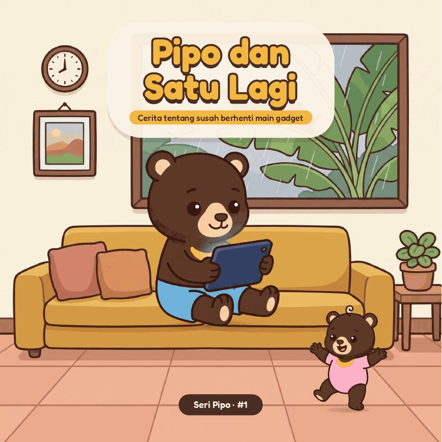
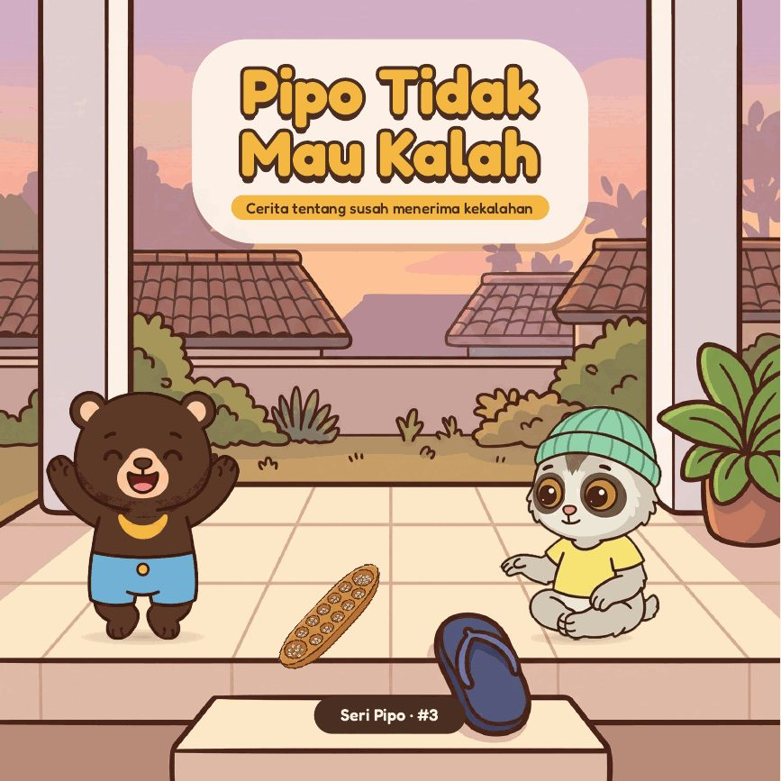
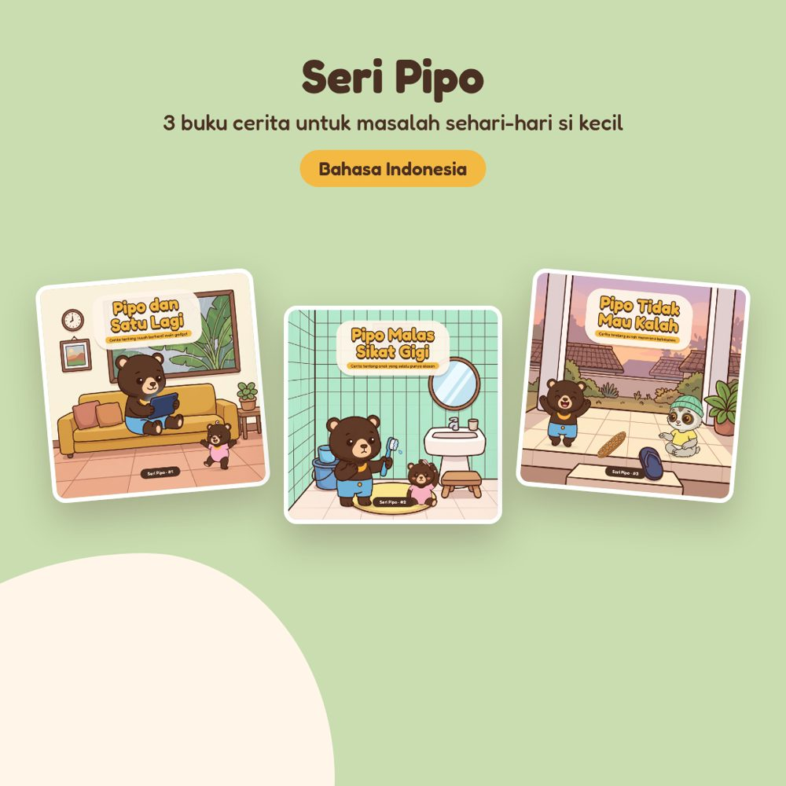

Buku cerita bergambar untuk masalah sehari-hari si kecil
Bersama Pipo si beruang madu, untuk anak 5–8 tahun. Tersedia edisi Indonesia, dwibahasa Indonesia–English, dan English.

Pipo dan Satu LagiAnak susah berhenti main gadget? Pipo menemukan caranya sendiri untuk bilang “cukup”. Pipo Malas Sikat GigiAnak selalu punya alasan untuk tidak sikat gigi? Pipo menemukan kenapa sikat gigi sungguhan itu penting.
Pipo Malas Sikat GigiAnak selalu punya alasan untuk tidak sikat gigi? Pipo menemukan kenapa sikat gigi sungguhan itu penting.
Pipo Tidak Mau KalahAnak ngambek setiap kalah main? Pipo belajar menenangkan “perut panas”-nya sendiri.
Paket 3 BukuLebih hemat daripada beli satuan.